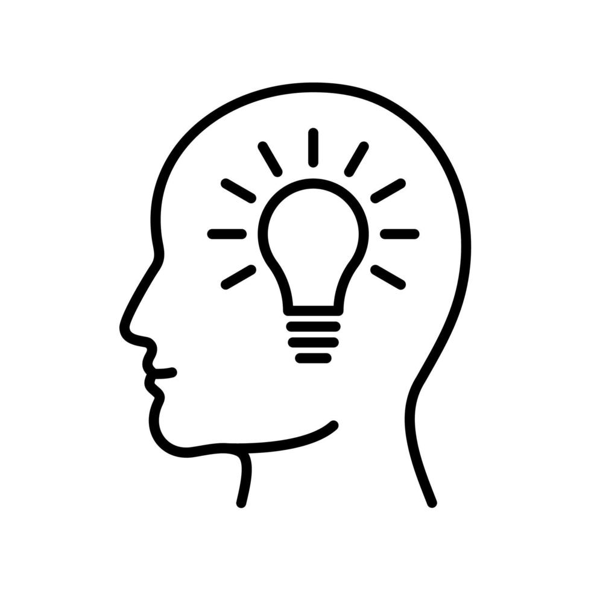

Fase 1: Brainstorming
Abbiamo iniziato il progetto affrontando un tema centrale e molto attuale:
la sfiducia delle istituzioni. Il gruppo ha discusso insieme le cause di questa distanza,
analizzando come il rapporto tra i giovani e il sistema possa cambiare nel tempo.
Durante il brainstorming, questa tematica è emersa in modo naturale come idea portante del lavoro,
diventando il punto di partenza per lo sviluppo del progetto.
Fase 2: Creazione del Sito Web
In questa fase abbiamo definito la struttura del sito e la forma più efficace
per comunicare il messaggio. Abbiamo organizzato i contenuti in modo chiaro e coinvolgente,
creando le pagine principali e scegliendo il layout più adatto per esprimere
la sfiducia delle istituzioni. Abbiamo poi diviso i compiti tra i membri della classe,
in modo da costruire un progetto coerente e facilmente comprensibile.

Fase 3: Creazione del Video
Dopo aver definito il concept del sito, siamo passati alla realizzazione del video,
una parte fondamentale del progetto. Abbiamo scritto i copioni, preparato il materiale visivo
e organizzato le scene per rendere il messaggio chiaro e coinvolgente.
Ogni componente del gruppo ha contribuito in modo diverso, lavorando sulla sceneggiatura,
sulla registrazione e sull'editing, per trasformare l'idea iniziale in un prodotto concreto.